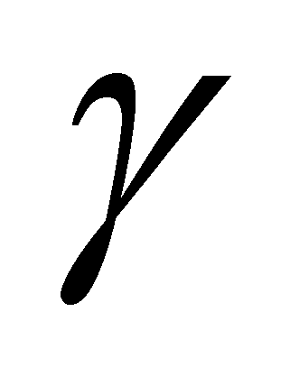
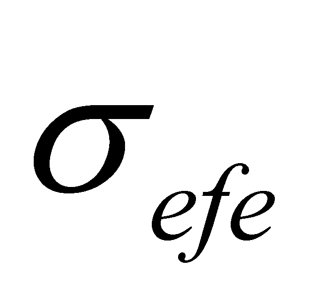
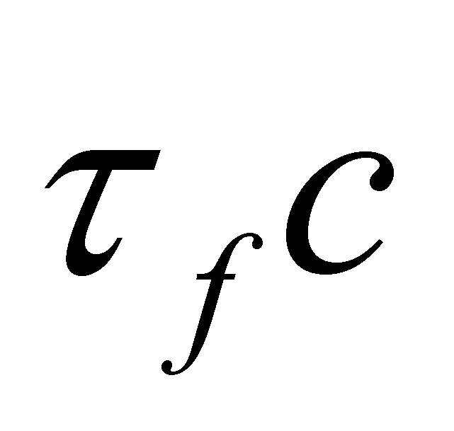
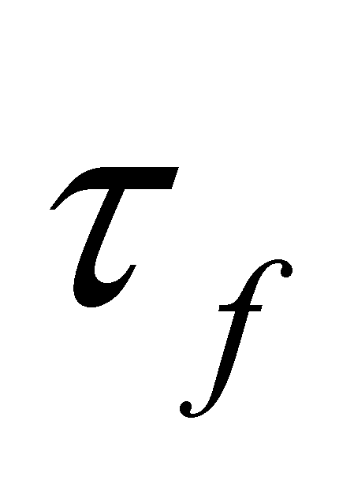
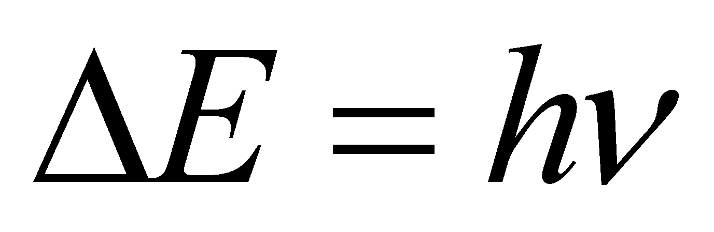

|
|
|
Definition X.24.3.1: EF which is released during an emission transition by a couple of bonded EP with opposite charges, placed on a pair of structural atomic orbitals is named atomic photon.
Comment X.24.3.1: According to the objectual philosophy, the notion of photon has a totally different meaning than the one presented into the school textbooks, referring to only at electromagnetic energy fluxes with a constant effective section, emitted in conditions specified by definition X.24.3.1, fluxes which have a different model as compared with variable section electromagnetic fluxes (the usual electromagnetic waves produced by macroscopic radiators), although both of them are made-up from the same elements, but which are structured differently, in terms of space. As it can be found by looking at the definition X.24.3.1, the atomic photon is produced by a radiator made-up from a couple of bonded EP, placed at intra-atomic distances one another, couple which may consist either in a nuclear peripheral proton and the related electron on the peripheral electronic layers, or in a neutronic proton and its external electron. In the first case, we are dealing with the atomic photons and in the second one, with the neutronic photons. There is no structural (model) difference between the two photon classes, but there is a quantitative one, the energy domain of the atomic photons ranging within infrared and X-ray radiation, while the neutronic photons have energy values mainly within the  radiation domain.
The underlining from the definition X.24.3.1 has the role to draw attention on the fact that the photon can be generated by a couple125 of EP which are placed at intra-atomic distances one another (namely, under a specific threshold), and if that distance is exceeded, the radiated flux is not photonic any more, but a flux with a variable effective section, that is a regular electromagnetic wave.
According to the classification from the chapter 7 regarding the components of the fluxes decomposed by RBS belonging to a MS, the photon which is released by a couple of EP bound in a system is part of the class of reflected fluxes (refluxes), because it is released only as a result of receiving (incidence) of an external flux (however, with a temporary storage phase in the medium under the incidence - the unstable or metastable state), and an external incident photon on the EP couple belongs to the influx classes.
For the time being, we are only interested in this reflux (the released atomic photon) due to reasons which will become clear later on. This type of energy flux (electromagnetic type) has some special characteristics which are experimentally confirmed:
A photon which is released into a transition TEk (k is the running number of the excited EO as compared to the fundamental orbital from the relation X.24.2.1) by an atom ATX, it will produce as a result of the impact with another atom ATY placed on the photon’s direction, an absorption transition TAk followed by a transition TEk. Therefore, the energy contained into the photon released from the atom ATX is preserved all the way, being entirely transmitted to the atom ATY, more exactly, to an EP from an external orbital which is able to receive the photon’s energy. Because the distance between the atoms ATX and ATY may reach millions of light-years, this means that the photon is a flux of constant effective section (as any corpuscular flux). The effective section of this flux  is equal with (or less than) the cross section of the volume in which the orbital of the receiving particle is included (because this is the only way which allows the total transfer of the photon’s energy to this EP). We may also add that there is a theoretical cylindrical surface, with a cross section and length  (where  is the duration of the photon’s emission and c is the propagation speed) which will contain inside all the electromagnetic energy stored into the photon, during its entire existence. Based on the above-mentioned facts, the size grade of is equal at most (if no less), with the size grade of the cross section of the receiving atom (for the atomic photons) or with the one of the neutron’s cross section (as regards the neutronic photons).
According to the general MS model, any type of motion (flux) deployed inside such a system must be maintained by means of a constant supply (constructively achieved) with an appropriate EF. The orbital and spin motion of EP are also this kind of motions, and the flux which is meant to maintain them must therefore contain, besides the common component of translation T, which is specific to all the fluxes, a rotation component R, as well. The flux (photon) which is released by an EP placed on an orbital (so, with a revolution motion) shall inherently contain a component R.
Comment X.24.3.2: By considering the generic MS model and taking into account the fact that this kind of system can be maintained only as a result of constructive interactions which imply synchronism, it is clear for the reader why the objectual philosophy cannot sustain the purely probabilistic hypothesis (dictated by the so-called “probability waves”) of the EP motions on the occupied orbitals within the structure of an atom. Obviously, any deterministic motion (as we have seen in the chapter focused on fluxes) has also a non-determination degree (otherwise, it would not be realizable), but there is clearly a deterministic (invariant) component which gives stability to the atomic structure and to all the objects which they are able to make-up.
Consequently, the photon flux is a T+R flux; the component T is the translation one with the propagation speed, and the component R is the result of the vectorial composition of all the rotation and revolution motions of the releasing EP.
Comment X.24.3.3: The energy fluxes T+R (the photon fluxes also belong to this class) are not like they would seem to be some “exotic fluxes” which are specific only to the photons, but they are much more spread in the world. The first example of this kind of fluxes, which are very common in the material processing field are the splintering tools with rotation motion (borers, drills, so on) where the component T of the flux represents the axial advance motion of the tool, and the component R, its rotation (splintering) motion. Another very common example is the helicopters and propeller aircrafts, where the flux R of the propellers produces the flux T+R of the air, that is a flux which generates both the sustentation (in case of the helicopters) and the running of this kind of aircrafts. At last, if we are thinking well, most of the fluxes used for the propulsion of the objects through NM and which operate based on propellers or turbines, belong to T+R type. All the bullets shot by rifles are also T+R fluxes, the rotation motion generated by the rifled barrel having the role to provide a gyroscopic stabilization of the position of the bullet’s axis along its pathway. Besides these examples from the “tangible” world, we have seen in chapters 6 and 7 that the atomic or molecular fluxes from the G media are T+R fluxes as well.
Since the photon is an open flux (on the propagation direction), it cannot be localized unless its propagation is deployed across a confined pathway, and in such case, the localization is possible within a volume which includes the pathway, as we have seen in the chapter about fluxes. Based on the above-mentioned issues and of the ones described in the chapter focused on fluxes, it is clear that a propagation flux can have a constant effective section only if there is a way to close it on the directions which are different from the propagation-displacement one, closure which can be related to the rotation component of the photon (the rotation, as a confinement method, was indicated in the chapter focused on fluxes).
Therefore, the photon has a finite energy content (given by the Plank’s relation ), which is limited, as we have mentioned at the point 1, by a cylindrical theoretical surface which contains inside it all this energy amount.
Comment X.24.3.4: This is a quantic aspect which is accepted by the systemic philosophy, which means that the energy of a specific photon is finite and always the same if its frequency is always the same, but the interpretation of Plank’s constant is much more different as compared to the current physics, across this paper, h being considered as a spectral energetic density and not an action quantum (it could not be otherwise if you have read the action’s definition presented in chapter 7). The spectral energetic density has obviously the same dimensions (Js=J/Hz). A spectrum is an abstract object consisting in an energetic distribution with a frequency support domain. Would you not consider more appropriate a combination between a frequency and a spectral density rather than a combination between a frequency and an action? We must take into account that at the moment when the Planck distribution of the thermal photon was conceived, there was no knowledge in the field of the spectral analysis as compared to the current one, but, in exchange, the mechanical thinking (with its concept of action) was prevalent.
125 In this section we are not talking about the case of the photons produced by the same type of EP, placed into a particle accelerator (for example, the synchrotronic radiation) which have another generation process, but keep the same specific attribute as the photons class - that is the constant effective section.
Copyright © 2006-2011 Aurel Rusu. All rights reserved.